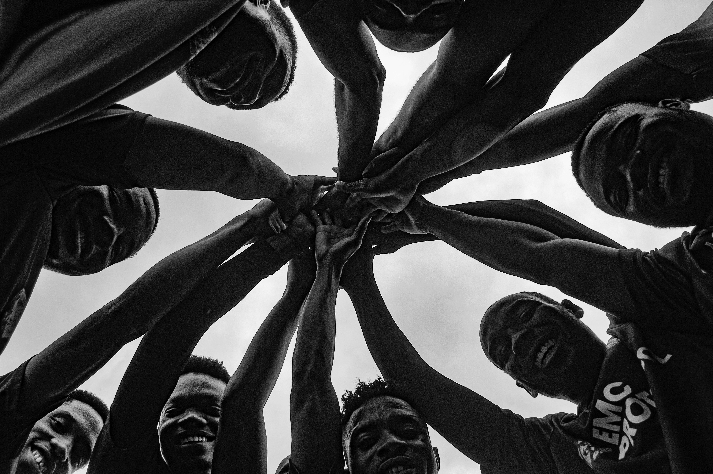

PROTÉGER LES COMMUNAUTÉS

À l’ombre d’un conflit incessant et du déplacement, Goma, une ville située à la lisière de l’est de la République Démocratique du Congo (RDC), fait face à une crise humanitaire sans relâche. Alors que le groupe rebelle M23 intensifie son avancée début 2025, la violence a déraciné des centaines de milliers de personnes, gonflant la population des camps surpeuplés autour de la ville. Avec plus de 700 000 personnes déplacées déjà dans la capitale du Nord-Kivu avant cette escalade, et des milliers d’autres fuyant quotidiennement, Wokovu Way ONG se pose comme un bouclier essentiel pour les plus vulnérables de Goma—familles, femmes et jeunes exposés à des conditions météorologiques rudes et à des situations désespérées. Dédiée uniquement à la fourniture de tentes, Wokovu Way lutte contre des éléments brutaux et une demande écrasante pour offrir un refuge fragile dans une région déchirée par la guerre.
Cette mission est enracinée à Goma, où l’organisation travaille sans relâche pour distribuer des tentes dans des camps comme Lushagala et Bulengo, transformant des barrières fragiles en symboles d’espoir. Au milieu du chaos du conflit, ces abris protègent contre la pluie, le vent et le désespoir, témoignant de la résilience face à l’adversité. En savoir plus sur nos débuts.
DISTRIBUTION DE TENTES
Wokovu Way ONG a fait de sa mission de protéger les familles déplacées en livrant des tentes aux camps tentaculaires qui encerclent Goma. Avec une population déplacée dépassant 800 000 personnes en mars 2025 en raison de l’offensive M23, la demande de logements a atteint un point critique. Ces tentes—fabriquées en bâche durable et renforcées par des poteaux—sont plus que de simples structures ; elles sont des bouées de sauvetage, offrant une barrière fragile mais essentielle contre le climat rigoureux de la région et une semblance de dignité pour les familles arrachées à leurs foyers. Wokovu Way donne la priorité aux plus vulnérables, y compris les mères célibataires comme Amina, arrivée au camp de Lushagala avec ses quatre enfants après que leur village ait été incendié.
Dans des sites comme Lushagala, où plus de 71 000 personnes s’entassent dans des abris de fortune, Wokovu Way a distribué plus de 5 000 tentes depuis janvier 2025. Ces abris protègent contre la pluie incessante et les vents venant du lac Kivu, empêchant les camps de devenir des bourbiers infestés de maladies. Pour Amina, la tente fournie par Wokovu Way est devenue un sanctuaire, permettant à ses enfants de dormir au sec pour la première fois en semaines. Lire l’histoire complète d’Amina ici.
CONDITIONS MÉTÉOROLOGIQUES RUDES

Le climat de Goma représente un défi redoutable pour ceux qui n’ont pas d’abri adéquat, surtout pendant la saison des pluies qui culmine en mars 2025. Nichée près du lac Kivu et de la Rift Albertin, la ville subit de fortes pluies et des vents violents qui transforment les camps de déplacement en déserts boueux et inondés. Pour les plus de 800 000 personnes déplacées, ces conditions sont brutales—les averses torrentielles trempent les affaires, transforment les sols en marécages et augmentent le risque de maladies hydriques comme le choléra, qui a connu une flambée dans les camps l’année dernière.
Le terrain volcanique, marqué par les éruptions du Mont Nyiragongo, offre peu de sol stable, le sol rocailleux faisant que les piquets des tentes se desserrent et que les structures s’effondrent sous la pression. L’humidité élevée et les nuits glaciales aggravent encore les difficultés, laissant les familles vulnérables à la pneumonie et à d’autres maladies. Les équipes de Wokovu Way travaillent jour et nuit pour renforcer les tentes avec des bâches supplémentaires et des sacs de sable, mais l’usure causée par ces éléments exige des réparations constantes. Découvrez comment nous nous adaptons à ces conditions.
SURPOPULATION ET DEMANDE
La crise à Goma est aggravée par une surpopulation sévère, un défi qui pousse les ressources de Wokovu Way à leurs limites. Les camps comme Bulengo et Kanyaruchinya débordent, avec de nouveaux arrivants fuyant l’avancée de M23—des centaines de milliers de personnes déplacées en quelques semaines, selon le rapport de l’Organisation Internationale pour les Migrations de janvier 2025—s’entassant dans des espaces déjà saturés. Cette affluence a submergé l’approvisionnement en tentes, laissant Wokovu Way lutter pour protéger une population qui croît plus vite que l’aide ne peut suivre.
Les chaînes d’approvisionnement sont un goulot d’étranglement—les routes vers Goma, essentielles pour livrer tentes et matériaux, sont souvent bloquées par les combats ou rendues impraticables par la boue et les débris des fortes pluies. La fermeture de l’aéroport de Goma et les restrictions sur le transport lacustre, signalées dans les mises à jour de début 2025, entravent davantage la logistique. La distribution dans ces camps chaotiques et surpeuplés est une tâche titanesque, les familles se disputant les rares tentes disponibles. Beaucoup, comme la veuve âgée Fatuma, attendent des jours sous la pluie, seulement pour trouver les stocks épuisés, les exposant aux éléments. Aidez-nous à répondre à cette demande.
EFFORTS DE PARTENARIAT
Wokovu Way ne fait pas face à cette crise seule, s’appuyant sur une collaboration stratégique avec des partenaires locaux et internationaux pour amplifier son impact. Des organisations locales comme AGIR-RDC, profondément ancrées dans les camps de Goma, aident à la distribution des tentes et à la coordination, mettant à profit leur connaissance pour identifier les familles les plus désespérées. Les partenaires internationaux, y compris les agences humanitaires de l’ONU, fournissent un soutien logistique lorsque c’est possible, aidant à approvisionner en tentes et à naviguer les routes d’approvisionnement fracturées malgré le conflit en cours.
Ces partenariats ont permis à Wokovu Way de distribuer plus de 7 000 tentes à travers le Nord-Kivu depuis l’escalade de la crise, une réalisation qui serait impossible seule. Cependant, les pénuries de financement—seulement 43 % du plan de 233 millions de dollars du HCR pour la RDC a été atteint fin 2023, une tendance probablement aggravée en 2025—mettent ces alliances à rude épreuve. L’agilité communautaire de Wokovu Way la maintient efficace, mais les infrastructures pillées et les ressources limitées signifient que beaucoup de tentes arrivent endommagées ou insuffisantes. L’organisation improvise avec des réparations, mais l’ampleur des besoins dépasse même cette résilience. En savoir plus sur nos partenaires.
LUTTE CONTINUE

Les efforts incessants de Wokovu Way à Goma incarnent un engagement farouche à protéger les communautés au cœur d’une crise en spirale. En fournissant des tentes, ils offrent une protection contre les pires intempéries—nuits trempées de pluie, vents mordants et camps inondés—donnant aux familles déplacées comme celle d’Amina un point d’appui fragile. Pourtant, les défis sont immenses : les conditions environnementales rudes usent rapidement les tentes, la surpopulation épuise les réserves, et les cauchemars logistiques entravent les livraisons. L’avancée de M23 en mars 2025, couplée aux récentes inondations qui ont submergé des parties du camp de Bulengo, ajoute une urgence à une situation déjà désespérée.
La collaboration avec les partenaires offre une bouée de sauvetage, mais avec un financement en retard et des infrastructures en ruine, la bataille est loin d’être gagnée. Wokovu Way vise à distribuer 10 000 tentes supplémentaires d’ici mi-2025, un objectif qui dépend d’un soutien accru. Pour l’instant, chaque tente érigée est une victoire, un bouclier contre les éléments et un phare d’espoir. À Goma, où la miséricorde est rare, le travail de Wokovu Way est une course contre la montre pour protéger les vulnérables. Rejoignez-nous dans cette mission cruciale.